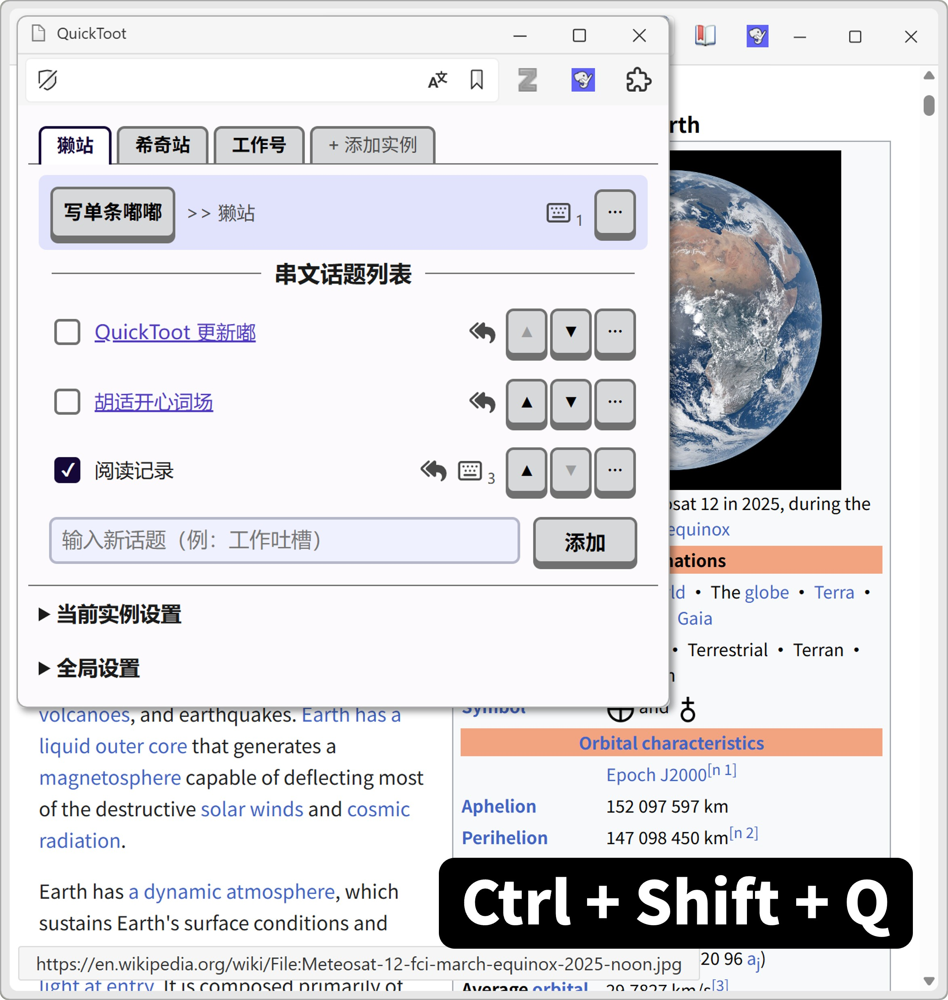
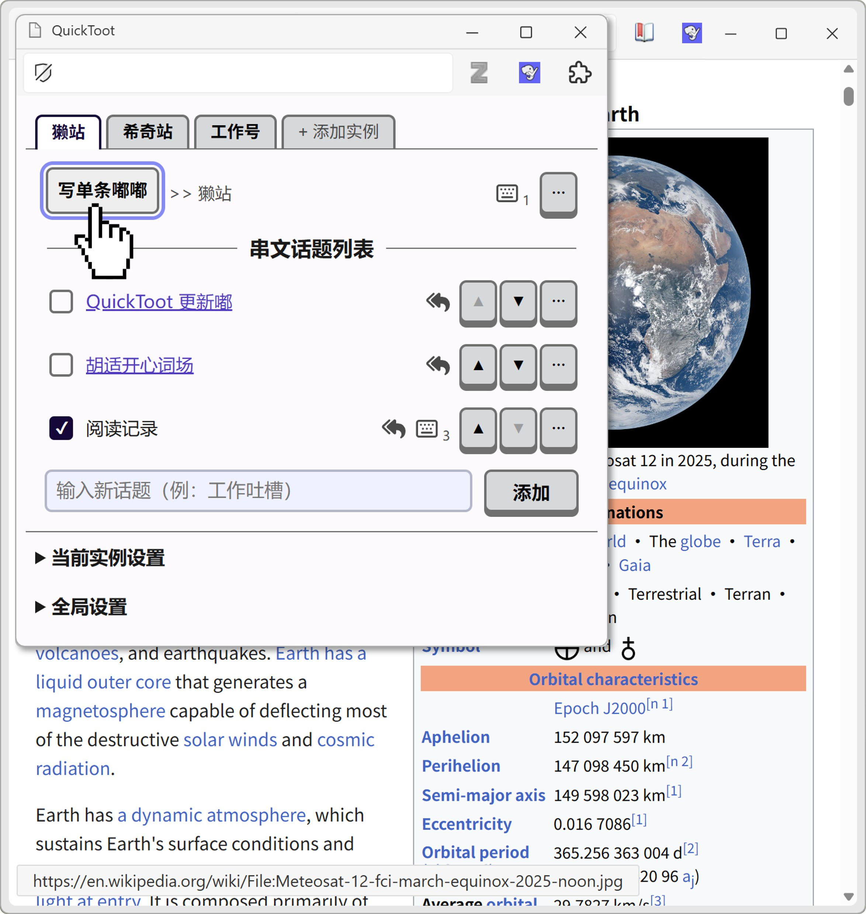
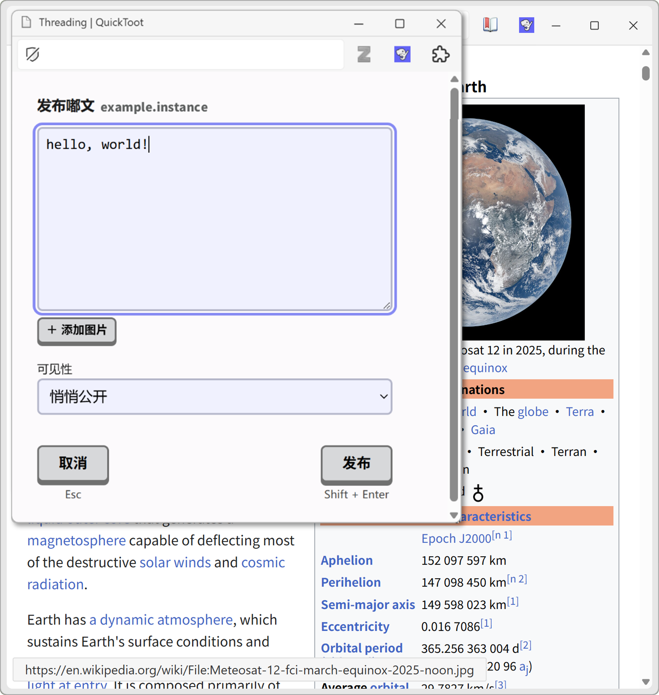
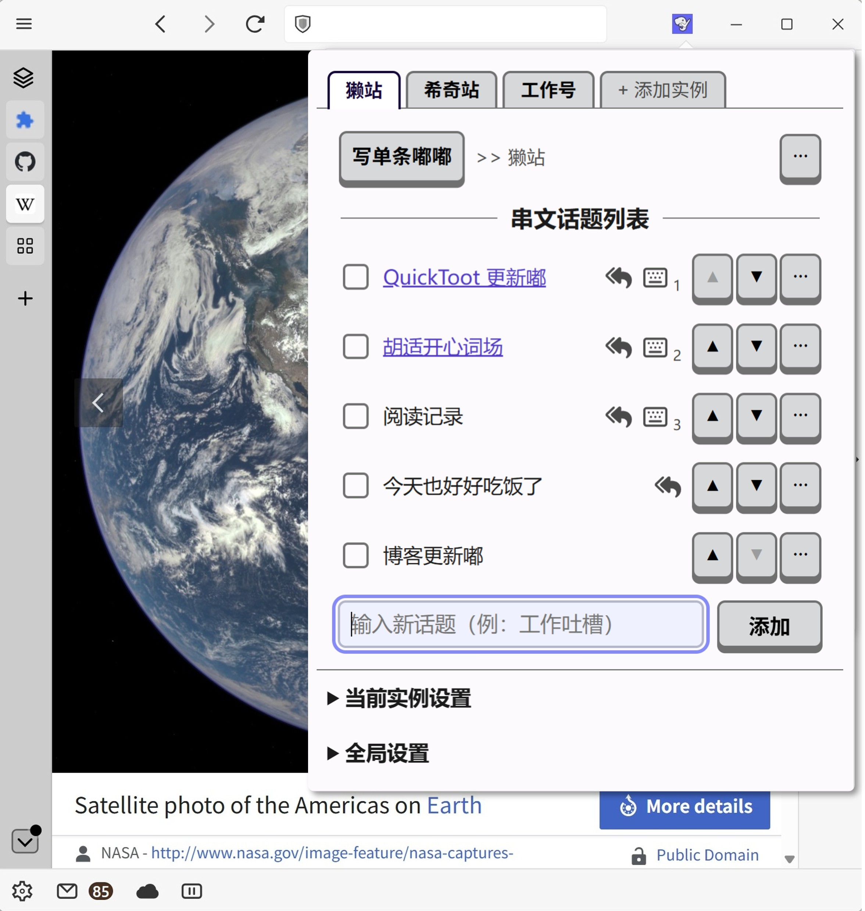
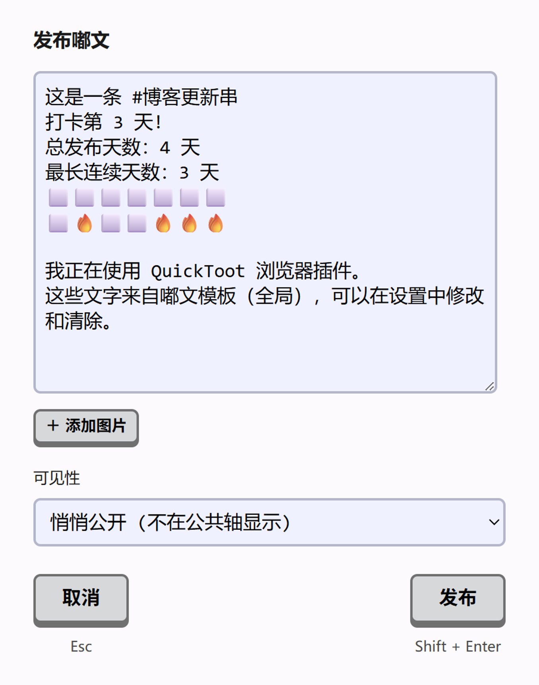

随处发嘟
在任何网页按下 Ctrl+Shift+Q唤出插件面板。
无需打开 Mastodon，点击「写单条嘟嘟」立刻弹出嘟文撰写框。

点击「写单条嘟嘟」或按下 Enter 弹出嘟文撰写框。或用 ↑ ↓ 选择话题发嘟。

嘟文撰写框。按下 Shift+Enter 发送，简洁无干扰。
自动串文
建立「串文话题列表」管理你常发的话题——读书记录、饮食打卡、工作吐槽等等。相同话题的嘟文自动回复上一条，形成嘟文串。


在任何网页用快捷键打开前三个常用话题，无需打开插件面板。默认 Ctrl/Cmd+Shift+1/2/3，可自定义。
预填模板
设置全局模板或各话题专属模板，用占位符自动填入话题名称、连续天数或习惯热力图。
例如：{topic}、{streak}、{heatmap}

安装指南
Ctrl + Shift + Q
↑ / ↓
Enter
Shift + Enter
Ctrl/Cmd + Shift + 1/2/3
-
为什么回复串文时不能选“公开”？
回复会继承原串的可见性，不能高于原串设置。
- 为什么 @ 提及不生效？
-
不想用嘟文模板，可以关闭吗？
可以，在设置中清空「嘟文模板（全局）」并保存。